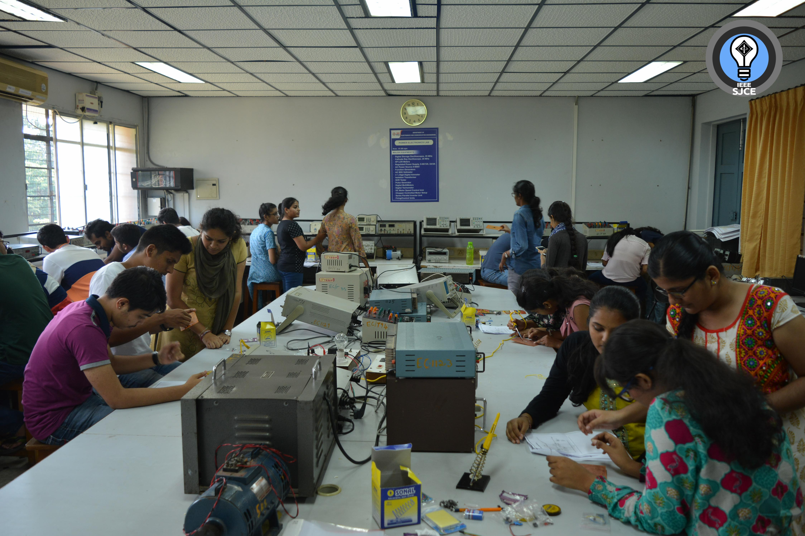
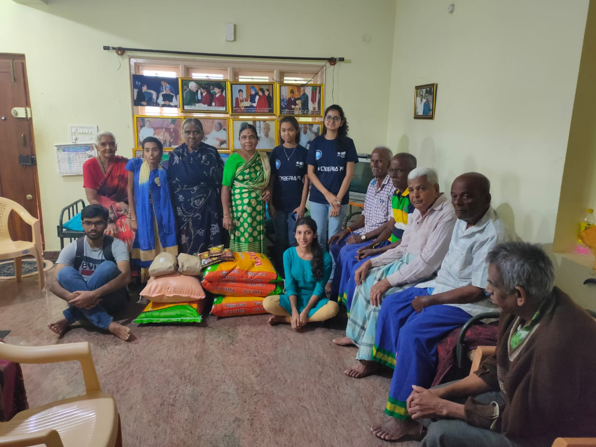

IEEE-SJCE Student Branch which started as an elite group 29 years ago, today has sprawled throughout the campus of SJCE,
making the students technically more competitive, more professional and capable of enhancing their abilities as an
engineer. Since then IEEE-SJCE STUDENT BRANCH, a division under Region 10 of IEEE has been known for the immensity with
which its members were bestowed. The very success story of its students as professionals into their respective fields
after graduations speaks of its standards.
IEEE-SJCE Student Branch which started as an elite group 29 years ago, today has sprawled throughout the campus of SJCE,
making the students technically more competitive, more professional and capable of enhancing their abilities as an
engineer. Since then IEEE-SJCE STUDENT BRANCH, a division under Region 10 of IEEE has been known for the immensity with
which its members were bestowed. The very success story of its students as professionals into their respective fields
after graduations speaks of its standards.
IEEE-SJCE now has about 330+ members from six fields of engineering: Biotechnology, Computer Science, Electronics &
Communication, Electrical & Electronics, Information Science, and Instrumentation Technology. Apart from these many
students from various post-graduation departments have also subscribed to be members.
IEEE-SJCE conducts two annual technical fests - TUXEDO, a Linux fest during the odd semesters, and CYBERIA, the annual
technical fest conducted during the even semesters. CYBERIA was instigated 19 years ago and has been organized for 18
years now. The events in the fest are so organized as to give students from all branches of engineering, irrespective of
them being members or not, and irrespective of their branches, a chance to showcase their talents and abilities.
 To make students technically competitive, technical tests on C programming microprocessors etc. are conducted.
Various workshops and crash courses are also organized. An annual leadership workshop adorns the calendar of events
every year, which helps the students to improve as leaders and inculcates in them the spirits of true leaders. Apart
from this, a number of talks are organized by people representing industry, academia, and research as well.
To make students technically competitive, technical tests on C programming microprocessors etc. are conducted.
Various workshops and crash courses are also organized. An annual leadership workshop adorns the calendar of events
every year, which helps the students to improve as leaders and inculcates in them the spirits of true leaders. Apart
from this, a number of talks are organized by people representing industry, academia, and research as well.
The standards of IEEE-SJCE were proven the best when it was awarded the Best Student Branch for the year 2003-2004.
Among the competitors for this tag were the top colleges of VTU, Manipal Institute of Technology, and NITK, Surathkal as
well.
IEEE-SJCE is also proud of nurturing the IEEE-EDS STUDENT CHAPTER. IEEE-SJCE is the only student branch to have gained
permission to start this chapter throughout India. IEEE-SJCE also has a Women in Engineering Student Chapter.
IEEE-SJCE EDS has been providing students with basic electronics knowledge since its inception. It has helped students get better familiarized with electronic components, the various techniques of circuit making, and the basics of robot building.
Snap circuit product is a tool for entering the exciting world of electronics. Electronics play an increasingly important role in our everyday lives, and so it is important to have some basic knowledge of them. In this workshop, the students have a hands-on session of basic electrical and electronics circuits. The workshop is conducted for first and second year students exclusively. The students are allowed to explore different circuits with the help of the manuals which come along with the kits under the supervision of volunteers.
Soldering is a concept used in every electronic appliance. It is necessary to know the proper soldering techniques. Keeping this in mind, IEEE-SJCE EDS conducts Soldering and Etching workshops in odd semesters, where senior IEEE EDS members teach the 2nd years and 1st years. They make participants etch a simple circuit and solder it.webThe main highlights of the workshop were that the participants got to learn robotics from scratch and then move on to more advanced topics like Bluetooth-controlled robots, voice-controlled robots, DTMF-controlled robots, and even Android app-controlled robots.
 "Whatever we possess becomes of double value when we have the opportunity of sharing it with others", this famous adage of Jean Nicolas embodies the idea of conducting VPM. Vacation Project Mania, an initiative of IEEE-SJCE EDS is conducted during the vacations. VPM is an interactive session in which the seniors and juniors mingle together to share their knowledge, ideas, and most important of all, an experience, but the torch bearers of this successful mania are the seniors without a doubt. VPM gets a huge response from all circuit branches, around 120+ students attend the project sessions every day for 4 hours. VPM plays a prominent role in generating practical impulse in the minds of young budding engineers.
As they say, our knowledge is volatile until we apply the concept of our knowledge in a real-time situation. Hence "Robotics", one of the biggest events in SJCE, is conducted annually by the IEEE-SJCE EDS Chapter. The workshop starts from building basic robots and ends with the participants being able to build robots that use collision avoidance and are controlled using mobile phones through DTMF.
IEEE Women in Engineering (WIE) is a global network of IEEE members and volunteers dedicated to promoting women
engineers and scientists, and inspiring girls around the world to follow their academic interests in a career in
engineering and science. It is the world’s largest technical professional organization dedicated to advancing technology
for the benefit of humanity. Its goal is to facilitate the recruitment and retention of women in technical disciplines
globally. IEEE WIE envisions a vibrant community of IEEE women and men collectively using their diverse talents to
innovate for the benefit of humanity.
The idea of WIE chapter in IEEE-SJCE student branch was conceived and implemented only a couple of years ago. Since its
inception, the chapter has been responsible for several activities and initiatives. WIE team has made frequent visits to
several organizations to reach out to underprivileged children and educate them about their chances in engineering.
IEEE-SJCE WIE also organises distinguished lectures by women professionals who help in encouraging young girls to strive hard and motivate them in achieving excellence in academics and profession. Apart from this, the WIE chapter of the student branch is also involved in organising technical competitions and workshops. The team intends to continue these activities along with the implementation of newer ideas.

(Platform for Rendering Aid to Young kids and Aiming to spread Smiles) A reach-out programme to provide underprivileged children a positive learning environment that will help them unleash their potential. This includes numerous visits to orphanages for providing academic aid to the kids. Additionally, kids are also helped with spoken English. Several organizations like Baapuji Children's Home, Sri Chayadevi Trust, Divya Deepa Charitable Trust, Vijaya Educational Society, etc. have been part of PRAYAS and have been given a chance to carry out the reach out programme. Currently, the team of WIE is carrying out PRAYAS in Rangarao Memorial School for Disabled, Mysuru.
A technical workshop that focuses on teaching concepts of microcontroller and its programming to differently-abled students to give the practical exposure of the subjects. It is a 2-day workshop held at JSS Polytechnic for the Differently Abled (PDA), Mysuru. IEEE-SJCE WIE has been practicing this workshop for 3 years and aims to continue doing so with more participants and newer concepts.
A distinguished lecture by a woman scientist from the aerospace engineering domain. The main motto of the event was to mark the demise of Indian-born women astronaut, Kalpana Chawla. The initiative to organize this event was taken in the year 2018. The chief guest for the event was Mrs N Valarmathi , Deputy Director , ISRO. A glimpse of missions undertaken by ISRO and challenges in completing those missions was given. WIE team aims to continue organizing this event annually.
WIE wing of IEEE brought us CODEFIESTA, an online coding competition sponsored by Sahaj Software. This 3-hour hackathon was open for all students and exciting cash prizes and certificates were provided to the winners. To encourage the participation of girls, special cash prize of 1K was awarded to each of the top 3 participants excluding the girls among top five winners.
 IEEE-SJCE RAS aims to keep the students updated about the trending technology used in automation. Robotics focuses on systems incorporating sensors and actuators that operate autonomously or semi-autonomously in cooperation with humans. Robotics research emphasises intelligence and adaptability to cope with unstructured environments. Automation research emphasises efficiency, quality and reliability, focusing on systems that operate autonomously.The IEEE Robotics and Automation Society's objectives are scientific, literary and educational in character. The Society strives for the advancement of the theory and practice of robotics and automation engineering along with allied arts and sciences, and for the maintenance of high professional standards among its members.
IEEE-SJCE RAS aims to keep the students updated about the trending technology used in automation. Robotics focuses on systems incorporating sensors and actuators that operate autonomously or semi-autonomously in cooperation with humans. Robotics research emphasises intelligence and adaptability to cope with unstructured environments. Automation research emphasises efficiency, quality and reliability, focusing on systems that operate autonomously.The IEEE Robotics and Automation Society's objectives are scientific, literary and educational in character. The Society strives for the advancement of the theory and practice of robotics and automation engineering along with allied arts and sciences, and for the maintenance of high professional standards among its members.
During the course of the workshop, participants were introduced to the fundamentals of Python starting from the very basics of the language. The workshop covered the topics like Introduction, Printing Statements, Operators and Variable types on Day-1. Topics such as Strings, Conditional statements, Lists, Tuples and Dictionaries were covered on Day-2, and on Day-3 participants learnt about Loops, Break and Continue statements, Functions, Modules and Libraries along with programming examples and development of Mini Projects.
Image processing is a method to perform operations on image inorder to enhance the image or get useful information from it. Image processing is a fascinating topic with wide applications. IEEE SJCE RAS along with EDS team conducted a 5 day event on image processing wherein basics of python were covered on the initial days followed by image processing concepts.
GNU octave is a software featuring high level programming language that is primarily intended for numerical
calculations. IEEE SJCE RAS had conducted an event on this software called "Introduction to Octave" in virtual mode.
Octave is a open source software similar to Matlab. Participants were introduced to the concepts of mathematical
computations in GNU Octave. This was a 3 day event in which an interesting application on Image processing was covered
on the last day.
IEEE-SJCE, in addition to the above-mentioned societies, also houses an eccentric Membership Development Committee and a
SBMDC wing.
IEEE-SJCE, in addition to the above-mentioned societies, also houses an eccentric Membership Development Committee and a SBMDC wing.
The Student Branch Membership Development Committee team helps in increasing IEEE Membership by recruiting new members and retaining current members. It also promotes elevations in grade and encourages participation in various society memberships. It contributes to the awareness by members of the values of their IEEE membership and increases IEEE membership quality. In addition, it provides efficient and timely communication to all IEEE management levels of the interests and concerns of our members and identifies membership trends, changes and problems.
IEEE-SJCE student branch
Sri Jayachamarajendra College of Engineering
Mysuru, 570006
Phone: +(91) 6205701439
Email: ieeesjce2019@gmail.com


 EDITORIAL BOARD
EDITORIAL BOARD STUDENT BRANCH
STUDENT BRANCH ELECTRON DEVICES SOCIETY
ELECTRON DEVICES SOCIETY WOMEN IN ENGINEERING
WOMEN IN ENGINEERING EXECUTIVE COMMITTEE
EXECUTIVE COMMITTEE MEMBERSHIP COMMITTEE
MEMBERSHIP COMMITTEE SOCIETY
SOCIETY BOARDS
BOARDS CYBERIA
CYBERIA TUXEDO
TUXEDO